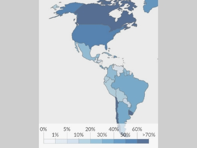
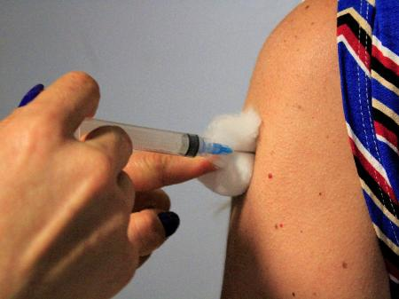
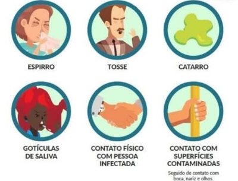

Ultimas noticias sobre o coronavírus no Brasil e no mundo.
Os casos de Covid-19 estão diminuindo
na América do Norte, mas na maior
parte da América Latina e Caribe o fim
da pandemia de coronavírus
"permanece um futuro distante",disse a
diretora da Organização Pan-Americana
da Saúde (Opas) Carissa Etienne nesta
quarta-feira (30).Enquanto as
infecções nos Estados Unidos,
Canadá e México estão diminuindo, na
América Latina e no Caribe apenas uma
em cada dez pessoas foi totalmente
vacinada contra a Covid-19, "uma
situação inaceitável", disse ela.

Ultimas noticias sobre Piraí do Sul (Pr).
A pequena cidade de Piraí do Sul, que apresenta aproximadamente 25.291 pessoas, tem uma quantidade de 3104 casos de coronavirus, onde uma grande quantidade, 2925 para ser mais exato, ja se recuperaram, e infelizmente 77 vieram a obito.
No quesito de vacinação, pessoas com 53 e 54 anos já estão sendo vacinadas e pessoas de mais de 40 anos ja agendaram o dia da vacinação

Como se previnir contra o Covid-19.
Como muitas pessoas ja sabem há varias formas de se proteger contra o coronavirus, aqui vai algumas delas:
Meios de transmissão do virus.
O coronavirus se transmite de varias formas que se assemelham com as formas de transmissão do virus da gripe, sendo eles:

Qual alcool usar contra o Covid-19?.
Muitos sabem que se precisa usar alcool em gel para se "limpar" do coronavirus, mas oque nem todos sabem é que existe um tipo, ou uma concentração, de alcool usada contra o covid que é o alcool 70%.
O álcool etílico a 70% tem sido amplamente utilizado na prevenção de infecção relacionada à assistência saúde no ambiente hospitalar, tendo em vista a sua eficácia, baixa toxicidade, baixo custo e facilidade de uso.
Para ter essa utilização o álcool etílico precisa estar diluído em água numa concentração de 70%, uma vez que a água facilita a entrada do álcool no interior do microrganismo e diminui a sua evaporação aumentando o tempo de ação.